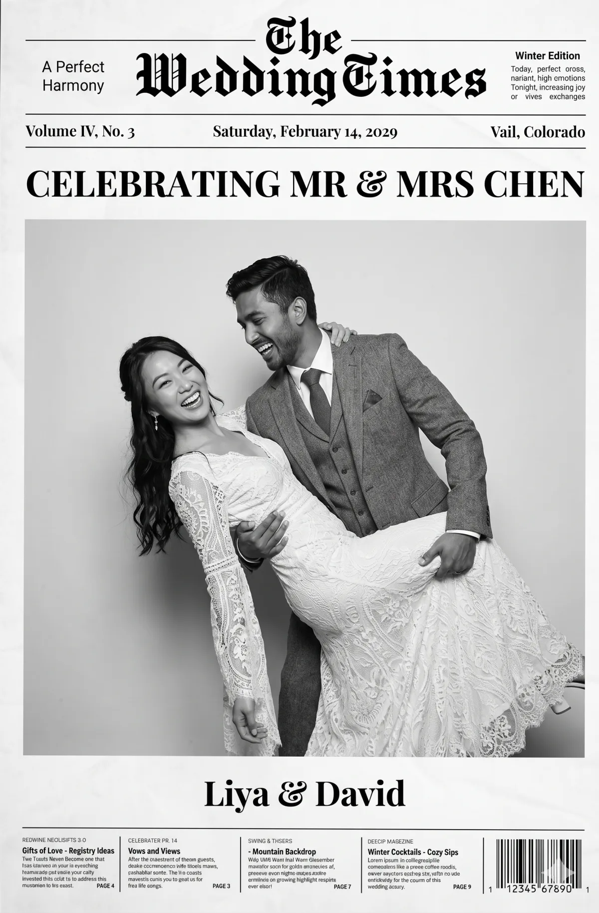

BoothLedger’s newspaper photo booth turns each guest photo into the front page of a custom newspaper. Guests type their own headline, names and date on the touchscreen, the AI lifts them off any background, and the finished front page prints full-size on A4 in seconds — a vintage, editorial keepsake they actually take home.

A newspaper photo booth turns every guest into the front-page story. They step in, type their own headline, pose, and within seconds a printed A4 newspaper — their photo as the lead image, their names in the masthead — is in their hand. BoothLedger handles every step (capture, AI background removal, template, A4 print and digital share) from a single Windows app.
Guests type their own headline, names, sub-headline and date on the touchscreen — “Celebrating Mr & Mrs”, a company launch, a birthday “exclusive”. The text drops straight into the masthead and front page, so every newspaper is unique.
A Canon DSLR (or webcam) takes the shot. BoothLedger’s AI background removal lifts the guest off whatever’s behind them — no green screen required — and drops them onto your branded newspaper front page as the lead photo.
The full front page prints on a dye-sublimation photo printer at A4 size in seconds. Guests also get a digital copy — still or animated GIF — by SMS, email or QR for socials and your cloud gallery.
The newspaper template isn’t a static download — it’s a live, editable front page inside BoothLedger. Set the masthead once for the event, and let every guest fill the rest in seconds.
Name the paper for the event — “The Wedding Times”, your company title, or a sponsor’s masthead — with edition line and tagline.
Each guest writes their own headline on the touchscreen. Lock it to a set line or leave it open for one-of-a-kind front pages.
Auto-fill the event date, edition number and venue so the paper reads like a genuine front page from the day.
The guest is lifted off any background and dropped in as the dominant front-page image — in colour, black & white or vintage sepia.
Couple or guest names, plus editable column text, sponsor blurbs, a QR code or barcode — all part of the keepsake.
BoothLedger prints the newspaper as a full A4 page (210 × 297 mm / 8.3 × 11.7″), so the masthead, headline and columns are big enough to actually read. That’s the difference between a novelty strip and a keepsake guests frame — an A4 front page feels like the genuine article, and it’s a premium upsell over a standard 4×6 print.
Prefer a smaller, faster format for high-volume events? The same newspaper template also outputs classic photo-print sizes on any dye-sublimation printer:
Everything you need to run a personalised newspaper front-page activation — editable mastheads, per-guest text, AI cut-outs, branded templates, A4 print and cloud gallery sync — in one Windows app. No Canva, no Photoshop.
Set the newspaper name, tagline and edition line for the event, then let every guest type their own headline and sub-headline on the touchscreen. Text renders into the front page instantly.
Add fields for couple names, guest names, company, event date and venue. Every front page is unique even when hundreds of guests pass through the booth at the same event.
No green screen needed. BoothLedger’s AI detects the guest in any venue and drops them cleanly onto the front page. See the green-screen comparison →
Masthead, colours, fonts, logos, column copy and layout are all customisable. Load multiple newspaper templates so different sponsors or sessions get different front pages at one event.
Prints the whole front page at A4 (210×297mm) on a dye-sublimation photo printer in seconds — big enough to read and keep. Also outputs 6×4, 4×6 and 2×6 if you want a smaller, faster format.
Capture a still front page or an animated newspaper GIF — the headline lands, the photo drops in — ready to share straight to socials alongside the printed A4 keepsake.
Tethered Canon DSLR and mirrorless support for sharp, print-ready front-page photography. Webcams supported too for simpler setups or roaming booths. DSLR camera list →
Every front page goes out by SMS, email or QR code seconds after printing, and syncs to BoothLedger Cloud for an online gallery and post-event download links.
Built for high-volume activations — capture, render and print queues run in parallel so guest 100 isn’t waiting on guest 99. Tested at weddings, fan zones and brand activations.
Anywhere a personalised, take-home front page beats a paper strip, a newspaper photo booth lands harder — and weddings are the runaway favourite.
“The Wedding Times” with the couple’s names and date as the headline, in classic black & white or vintage newsprint. The #1 use case — every guest leaves with an A4 keepsake. Pairs with wedding photo booth software.
Your company masthead, a “breaking news” product launch, an awards-night front page. Job titles and team names on the page make it an icebreaker plus a branded keepsake. Works with corporate photo booth software.
The front page itself becomes branded collateral — sponsor masthead, campaign headline, QR code, hashtag. Guests carry an A4 advert home and onto socials. See brand activation booth ideas →
A “40 Years a Legend” exclusive, a retirement special edition, a hen or stag front-page scandal. The novelty headline turns a print into something people genuinely keep.
Interactive front-page keepsakes that put visitors into a period newspaper — a themed masthead and headline that fit the exhibit, printed on the spot as a memorable takeaway.
Want the glossy celebrity look instead of newsprint? The same booth runs AI magazine-cover effects — offer newspaper and magazine front pages side by side, or swap a trading card in for variety.
30-day free trial — editable newspaper templates, AI background removal, full A4 print, cloud sync. No credit card.
A newspaper photo booth is a live-event experience where guests step in front of a camera, type their own headline and names, and walk away with a printed A4 newspaper of themselves — their photo as the lead image, with their names and the event date in the masthead. BoothLedger captures the photo, removes the background with AI, drops it into an editable newspaper template and prints the front page on-site in seconds.
Four steps: the guest types their headline, names and date on the touchscreen; a Canon DSLR or webcam takes the photo and the AI lifts them off the background (no green screen needed); the photo and text drop into your branded newspaper front-page template; and the finished page prints full-size on A4 and is shared instantly by SMS, email or QR code.
Yes — the headline format is a full A4 front page (210×297mm, or 8.3×11.7″), so the newspaper reads like the real thing instead of a small photo strip. A4 keeps the masthead, headline and columns legible and gives guests a premium keepsake. BoothLedger can also output 4×6 and 6×4 newspaper prints if you want a faster, smaller format on a dye-sublimation printer.
BoothLedger’s Photobooth plan starts at €20/month and includes the newspaper front-page templates and on-site printing. The AI Photobooth plan at €35/month adds AI background removal and the full effects suite. Both plans include a free 30-day trial with no credit card required — a fraction of the cost of buying a dedicated newspaper photo booth kiosk. See the full pricing page →
Yes — that’s the heart of it. Every guest enters their own headline, names, sub-headline and date directly on the touchscreen, and the text renders straight into the front page. You can lock fields (for example, fix the masthead to “The Wedding Times”) or leave them open so guests write their own headline. Every printed newspaper is unique.
No. BoothLedger’s AI background removal detects the guest in any venue, any lighting, and drops them cleanly into the front page — no green screen required. You can still use a traditional green screen if you prefer; both methods place the guest neatly into the newspaper template.
Yes. The masthead, headline, colours, fonts, column text, logos and the whole layout are customisable. Load “The Wedding Times” for a wedding, a sponsor’s branded paper for an activation, or your company masthead for a corporate launch — and run multiple newspaper templates at the same event so different sessions or sponsors get different front pages.
It’s the single most popular use. Couples love a “The Wedding Times” or “Just Married” front page with their names and wedding date as the headline, in a black-and-white or vintage newsprint style. Every guest leaves with a personalised A4 newspaper keepsake, and it pairs naturally with BoothLedger’s wedding photo booth software →
Yes. Every front page is shared digitally as well as printed — by SMS, email or QR code — and synced to BoothLedger Cloud for an online gallery and post-event downloads. You can capture a still front page or an animated newspaper GIF version that’s perfect for social media.
Same idea, different editorial style. A newspaper photo booth makes a full A4 front page with a masthead, headline and columns for a vintage, editorial keepsake look. A magazine cover photo booth makes a glossy celebrity-style cover. BoothLedger ships both, so you can offer whichever style suits the event.